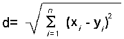

Clustering is a technique for finding similarity groups in a data, called clusters.
It attempts to group individuals in a population together by similarity, but not driven by a specific purpose.
K-means clustering is a type of unsupervised learning, which is used when you have unlabeled data
(i.e., data without defined categories or groups). The goal of this algorithm is to find groups in the
data, with the number of groups represented by the variable K. The algorithm works iteratively to assign
each data point to one of K groups based on the features that are provided. Data points are clustered
based on feature similarity. The results of the K-means clustering algorithm are:
- The centroids of the K clusters, which can be used to label new data
- Labels for the training data (each data point is assigned to a single cluster)
Imagine a retail website that needs to decide who gets certain offers based on the number of products
they have bought and also the number of products they have reviewed on the portal. For this purpose,
we would need to cluster people in groups logically. The simplest approach would be k-means clustering.
K-means Clustering Algorithm
To illustrate how the k-means clustering algorithm works, scroll down to follow each step of this algorithm.
Initial Graph
Let's consider 25 random data points in a vector space (for the above mentioned example, these would be customers).
Step 1 - Plot the Centroids on a scatterplot
We then choose any 3 random points in our vector space as our centroids and color them to distinguish them from each other.
Step 2 - Cluster Assignment
For each data point(xi), find the nearest centroid(cj) by calculating either the Euclidean distance or Manhattan distance.
Assign each data point to the nearest centroid and change it to the corresponding centroid color.
Manhattan distance is used for data where dimensions are not comparable and data noise (variance) is not high otherwise Euclidean distance is used. In general, Euclidean distance reduces error prcentage is datasets with comparable dimensions.
Step 3 - Euclidean Distance
For this graph, we have used Euclidean distance to calculate and assign each data point to its nearest centroid.
This distance is given by the formula:

Hover over the lines or points to view the distance of the point from its corresponding centroid.
Step 4 - Recalculating Centroids till Local Optimum is reached
Recalculate the new centroids for every cluster by finding the mean of all the points assigned to the previous jth cluster.
Change the centroid and reassign cluster points based on lowest distance. Repeat this till no point changes its cluster.
Observe the graph to see the centroids and clusters change till local optimum (0 points change) is achieved.
Is optimum really optimal?
Unfortunately k-means is dependent on the number of clusters we choose and the initial centroids we choose. Which means the local
optimum clusters might not be the best solution. To find optimum number of clusters, concept of Elbow Point is used.
So how will our retail website use this algorithm? Scroll on to find out!
When the local optimum is achieved, all the points get assigned clusters based on their similarity to each other (their distance from each other).
Tieing it to our initial example, this means that customers who buy high number of products and have given lots of reviews would get one type of deal, while
those customers that buy few products and have given fewer reviews would get another deal.
Similarly, people who have bought many products while giving few reviews
would get a different deal and those who have bought few products but have given a lot of reviews would get another deal.
Try It Yourself!
Here you get the chance to choose your own settings and see the clusters come to life!
You can choose as many points (N) as you want and upto 15 clusters (K) to cluster your data points.
Use the 'Step' button to update the centroid and intermediate clusters till local optimum is reached.
Use the 'Reset' button to restart and randomize the initial data points.